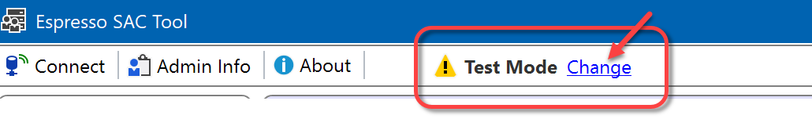

Safe Mode
This topic is aimed at Espresso ELN server administrators.
After the installation of SAC, the Espresso ELN server database is in Test Mode where it continues to be accessible by all Espresso ELN application versions, but in different ways:
- Client versions 8.4.1 and up recognize SAC rules when attempting to access server experiments. This means that some experiments currently may not be shareable.
- Earlier client versions ignore SAC rules, all server experiments can be accessed without restrictions.
Safe Mode
In order to prevent SAC restrictions to be bypassed by earlier client versions, the server database can be set into Safe Mode, which (reversibly) breaks server access of Espresso ELN versions earlier than 8.4.1. Before applying this mode, all users need to update to Espresso ELN 8.4.1 or higher - otherwise server access is lost for older versions.
The current mode is displayed in the header section of the SAC tool:

The blue Change link is only visible if logged in as administrator. Clicking it brings up the mode selection dialog:

Important: Plan the Mode Change!
Mode changes will break server access of running Espresso ELN clients. To prevent crashes, therefore all clients must be closed before the mode change. After the switch, the clients will automatically adapt to the new mode when re-launched. Therefore:
- Always inform all of your users to close their running Espresso ELN applications before you plan to apply a mode switch.
- Before switching to Safe Mode, make sure that all users have Espresso ELN 8.4.1 or higher installed. Previous versions will not be able to access the server anymore!
- Inform your users to re-launch their Espresso ELN clients after the switch was performed.